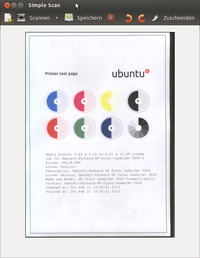
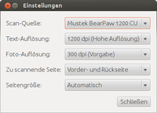
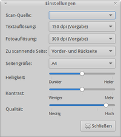
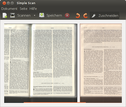

Simple Scan
Dieser Artikel wurde für die folgenden Ubuntu-Versionen getestet:
Ubuntu 16.04 Xenial Xerus
Ubuntu 14.04 Trusty Tahr
Zum Verständnis dieses Artikels sind folgende Seiten hilfreich:
Simple Scan ist das Standard-Scanprogramm in Ubuntu, Lubuntu, Xubuntu, Ubuntu Gnome, Ubuntu MATE und Ubuntu Studio. Es handelt sich um ein SANE-Frontend mit GTK3-Oberfläche, das - wie der Name schon andeutet - einfache und grundlegende Funktionen für das Scannen bereitstellt und für die häufigsten Aufgabe schnell und unkompliziert arbeitet. Die Ausgabe erfolgt grundsätzlich als Rastergrafik (also Bilddatei), entweder als verlustbehaftete JPEG, verlustfreier PNG oder eingebettet in ein (nicht durchsuchbares) PDF-Dokument. Simple Scan greift unter anderem auf ImageMagick zurück, um das intern verwendete Formate zu konvertieren.
Installation¶
 Simple Scan ist außer bei Kubuntu standardmäßig installiert und andernfalls über das folgende Paket nachrüstbar [1]:
simple-scan
 mit apturl
mit apturl
Paketliste zum Kopieren:
sudo apt-get install simple-scan
sudo aptitude install simple-scan
Das Programm findet man bei Ubuntu-Varianten mit einem Anwendungsmenü unter "Grafik → Simple Scan".
Konfiguration¶
  Im Reiter "Dokument → Einstellungen" lassen sich die Angaben für die "Scan-Quelle" (es werden alle erkannten unterstützten Scanner aufgelistet) und die "Text"-(monochrom) und "Foto-Auflösung" (farbig) machen (die dort einstellbaren Werte sind vom Scanner abhängig). Außerdem lassen sich Angaben zur "Scan-Side" (nur relevant für Scanner mit automatischem Papiereinzug und Duplexfunktion) sowie zur "Page-Side", also den Scanbereich, machen. Allerdings sind dort nur Hochformate einstellbar; unter der in Ubuntu 12.04 verwendeten Version hat eine Veränderung der Einstellung auch keinerlei Einfluss auf die tatsächliche Größe des gescannten Bereichs (siehe 660548, ggf. vom verwendeten Backend abhängig). Unter Ubuntu 14.04 funktioniert die Einstellung richtig.
In neueren Versionen des Programms können zusätzlich Helligkeit und Kontrast des Scans geregelt werden. Außerdem auch die Qualität der JPEG-Ausgabedatei, die standardmäßig auf 75% festgelegt ist. Da für diese Einstellungen nur ein Schieberegler zur Verfügung steht, wird es schwierig bei Bedarf genaue Werte anzugeben. Allerdings lassen sich diese Werte auch direkt im Schlüssel /org/gnome/simple-scan des Konfigurationssystems dconf entweder über den grafischen Konfigurationseditor oder in der Befehlszeile [2] ändern. Zum Beispiel:
gsettings set org.gnome.SimpleScan jpeg-quality 85 gsettings set org.gnome.SimpleScan brightness -10 gsettings set org.gnome.SimpleScan contrast 25
Der Modus für den jeweiligen Scan wird über das Dropdown-Menü neben der "Scannen"-Schaltfläche festgelegt, dort lassen sich die Einträge "Text" oder "Foto" aktivieren. Außerdem kann dort eingestellt werden, ob ggf. alle Vorlage aus dem Einzug eines MultiPage-Scanners gescannt, oder nur ein einzelner Scan erfolgen soll.
Bedienung¶
 Der Scanvorgang wird über die Schaltfläche "Scannen" (oder Strg + 1 ) gestartet. Es erscheint eine Bild, das dann weiter bearbeitet werden kann. Vorgesehen ist eine Drehung (im/gegen den Uhrzeigersinn über die Schaltflächen, "Seite → links/rechts herum drehen" oder [ bzw ] ) sowie ein Zuschnitt (Schaltfläche "Zuschneiden"). Dort sind einige Größen vorgegeben, der Bereich kann aber auch manuell mit der Maus angepasst werden. Außerdem ist eine 90°-Drehung möglich.
Mit der Plus-Schaltfläche, Strg + N oder "Dokument → Neu" wird ein neuer Scan gestartet, ein ggf. bereits vorhandener wird dabei kommentarlos gelöscht. Der Vorgang lässt sich über Esc oder "Seite → Scanvorgang anhalten" abbrechen.
Für Mehrfachscans wird die "Scannen"-Taste nochmals betätigt, Einstellungen des ersten Scans werden dabei übernommen, können aber auch individuell angepasst werden.
Die Speicherung erfolgt über die "Speichern"-Schaltfläche; im sich öffnenden Dialogfenster sind die Formate .jpg, .png oder .pdf vorgesehen. Tatsächlich lässt sich z.B. auch .tiff über Angabe der Dateiendung verwenden. Bei Mehrfachscans, die nicht im PDF-Format gespeichert werden, erfolgt die Abspeicherung in mehreren Dateien, die jeweils eine Zähler-Erweiterung angehängt bekommen (z.B. image.png, image-1.png, image-2.png). Eine für die Weiterverarbeitung sinnvolle Zählung nach dem Muster image001.png, image002.png etc. ist leider momentan nicht möglich.
Achtung!
Simple Scan hat eine etwas eigenwillige Speicherstrategie. Bei einem Scanvorgang mit mehreren Seiten wird nur für die erste Seite abgefragt, ob die Datei existiert. Alle weiteren mit laufenden Nummern versehenen Dateien werden kommentarlos überschrieben. Es wird also nicht, wie man vielleicht erwarten würde, die Nummerierung nach der höchsten Zahl fortgesetzt. Ungewollter Datenverlust lässt sich am einfachsten vermeiden, wenn man jede einzelne Seite über "Dokumente → Speichern unter …" abspeichert und den Dateinamen von Hand anpasst.
Drucken¶
Hinweis:
Die Funktionen Drucken und E-Mail sind in der Ubuntu 14.04 enthaltenen Version von Simple Scan ggf. nur über die Tastenkürzel (siehe unten) zu erreichen!
Es kann auch gleich ein Ausdruck des Scans erfolgen, dazu "Dokument → Drucken" ( Strg + P ) aufrufen. Weitere Einstellungs- und Korrekturmöglichkeiten (Vorschau, Farbkorrektur, Kontrastanpassung, Zoomfunktion, OCR etc.) liefert das Programm momentan nicht.
Scan2Mail¶
Außerdem lässt sich aus Simple Scan heraus ein Scan per E-Mail verschicken. Über "Dokument → E-Mail" (oder Strg + E ) wird dazu das im System verwendete E-Mail-Programm aufrufen. Der Scan wird einer neuen Nachricht unter dem temporären Namen der Datei angehängt. Scan2Mail funktioniert allerdings laut des Fehlerberichts 515386 im Kombination mit xdg-utils, Xubuntu und Thunderbird nicht. Fehlermeldung:
Unable to detect the URI-scheme of "mailto:"
Die Lösung: Die Datei /usr/bin/xdg-email mit Root-Rechten bearbeiten [3]. Nach
open_xfce()
suchen. Zwischen den Klammern {...} folgendes einfügen (und dabei das, was dort vorher stand, entfernen):
DEBUG 5 "open_xfce - Trying to use Thunderbird to send message"
local client
client=`gconftool-2 --get /desktop/gnome/url-handlers/mailto/command | cut -d ' ' -f 1` || ""
echo $client | grep thunderbird > /dev/null 2>&1
if [ $? -eq 0 ] ; then
DEBUG 5 "open_xfce - Running Thunderbird (${client})"
run_thunderbird "$client" "$1"
# No need to handle sucess or failure - run_thunderbird
# sub-routine terminates script.
fi
DEBUG 5 "open_xfce - FAILED to use Thunderbird to send message"
# We only reach this point if we have failed to start Thunderbird.
# The exo-open utility does not appear to support opening a
# message window.
# The exo-open utility does not support the "mailto:" URL.
param=`echo $1 | sed 's/mailto\:/MailReader/'`
DEBUG 5 "open_xcfe - Falling back to exo-open \"${param}\""
# exo-open --launch "${param}"
exo-open --launch ${param}
if [ $? -eq 0 ]; then
exit_success
fiDanach sollte es funktionieren.
Faxe versenden¶
Über das Programm Roger Router ist es möglich, einen entsprechenden Router vorausgesetzt, Faxe direkt aus Simple Scan zu verschicken. Dafür wird der entsprechend eingerichtete Fax-Drucker für die Druckausführung verwendet. So können auch mehrseitige Scans direkt ohne Umwege (Zwischenspeicherung) in einem Fax versandt werden.
Tastenkürzel¶
| Simple Scan, "Dokument" | |
| Tasten | Funktion |
| Strg + N | Neu |
| Strg + 1 | Einzelne Seite scannen |
| Strg + F | Alle Seiten aus dem Papiereinzug scannen |
| Esc | Scanvorgang abbrechen |
| Strg + S | Speichern |
| Strg + E | |
| Strg + P | |
| Strg + Q | Beenden |
| "Seite" | |
| [ | Links herum drehen |
| ] | rechts herum drehen |
| Entf | Löschen |
| F1 | Hilfe, Inhalt |
Problembehebung¶
Menüleiste fehlt in Unity¶
Unter Ubuntu 14.04 mit Unity kann ggf. das Einstellungsmenü nicht geöffnet werden; die Leiste mit den Tabs dazu erscheint nicht. Abhilfe schafft die Installation [1] des Paketes
indicator-appmenu
mit apturl
Paketliste zum Kopieren:
sudo apt-get install indicator-appmenu
sudo aptitude install indicator-appmenu
Dann erscheinen die Menüpunkte, wenn man den Maus-Cursor über der Fensterleiste stehen lässt.
Eine provisorische Lösung besteht darin, den Scanner vom Rechner zu trennen, oder mit einem anderen Programm zu verwenden, und gleichzeitig unter Simple Scan einen Scanversuch zu starten. Dann lässt sich sich der Einstellungsdialog über "Scanner wechseln" öffnen (siehe auch Diskussion  auf Launchpad).
auf Launchpad).
Eine alternative Möglichkeit besteht darin, die Einstellungen über den dconf-editor zu bearbeiten und dort unter /org/gnome/simple-scan die gewünschten Änderungen vorzunehmen.
Alternativen¶
Etliche Alternativen sind unter Scanner/Software aufgeführt:
XSane liefert dabei die bei weitem umfangreichsten Einstellmöglichkeiten
JFotokopie kann, wenn vornehmlich fotokopiert werden soll, ebenfalls gute Dienste leisten, und hat z.T. sogar mehr Einstellungsmöglichkeiten
Links¶
DocumentScanning
- Anforderungskatalog für die EntwurfsphaseIntroducing Simple Scan
- Blogeintrag des Entwicklers, 12/2009
- Erstellt mit Inyoka
-
 2004 – 2017 ubuntuusers.de • Einige Rechte vorbehalten
2004 – 2017 ubuntuusers.de • Einige Rechte vorbehalten
Lizenz • Kontakt • Datenschutz • Impressum • Serverstatus -
Serverhousing gespendet von